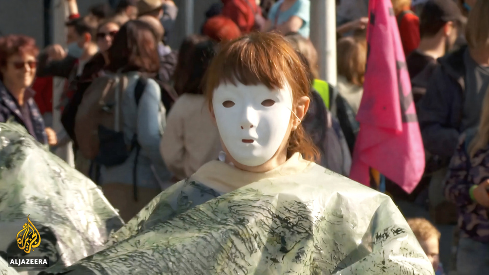
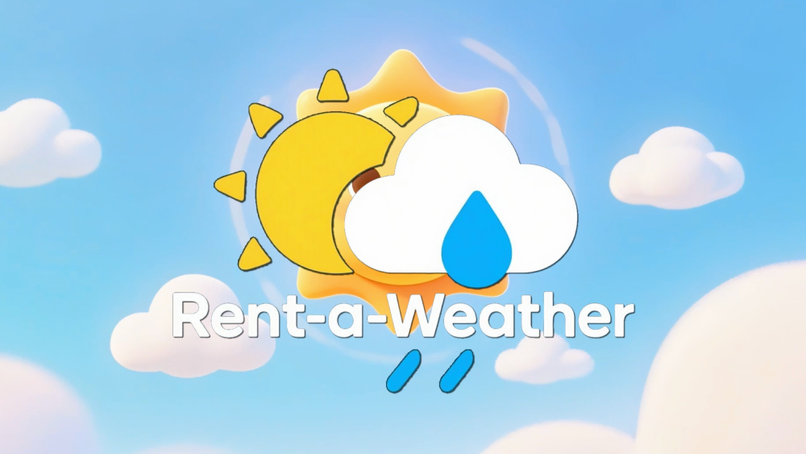
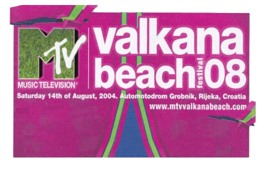

For over 30 years, I’ve looked through a lens, capturing history as it unfolds — from the Balkans to Brussels.
I worked with industry standards like LiveU, Aviwest, and Dejero — they are solid tools, but often rigid, costly, and brittle when conditions turn chaotic. I grew tired of the "plug and pray" moments — sweating over a connection menu while the action passed by.
So, I built my own solution.
I built a system grounded in open-source flexibility and forged by real-world demands. I adapt on site. I don't ask for permission from the internet.
Why share it?
I am not a corporation. I am a cameraman who solved a problem.
Reliable streaming shouldn't be the most expensive part of your production — it should be as standard and reliable as your tripod.
I offer this solution to colleagues and clients who value results over brand names.




